<hr style="margin-top: 10px;margin-bottom: 10px;" /> <div style="text-align:center"> <h3>4-body reaction features <span style="color:tomato;">universally</span> correlated with <br>dimer & trimer subsystems<br> <p style="color: tomato;font-size: 40%;">February 25, 2025</h3> </h3> </div> <p>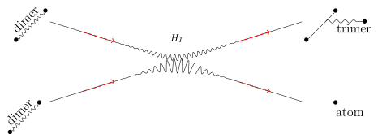</p> <hr style="margin-top: 80px;margin-bottom: 10px;" /> <div style="font-family: serif; display:flex ;flex-direction:column;vertical-align:bottom;margin-top: auto;"> <h4 style="color:grey;font-size: 15px;"> Sourav Mondal, Rakshanda Goswami, Udit Raha -- <span style="color:black;font-size:80%">IIT Guwahati</span><br> J. Kirscher -- <span style="color:black;font-size:80%">SRM University AP</span> </h4> </div> --- <div style="text-align:top"> <h3 style="color:gray;font-size: 25px;text-align: center;"> <span style="color: dodgerblue;"> Universal</span> and <span style="color: tomato;"> peculiar</span> features of <span style="color: dodgerblue;"> short-distance-different</span> particles<br> </div> <hr style="margin-top: 40px;margin-bottom: 100px;" /> <div class="grid-container" style="grid-template-columns: auto auto auto;margin-top: 25px;"> <div class="grid-item" style="background-color: rgb(255, 255, 255);"> <img src="./images/asterix_nfl.jpg" style="max-width: 230px;"> </div> <div class="grid-item" style="background-color: rgb(255, 255, 255);"> <p>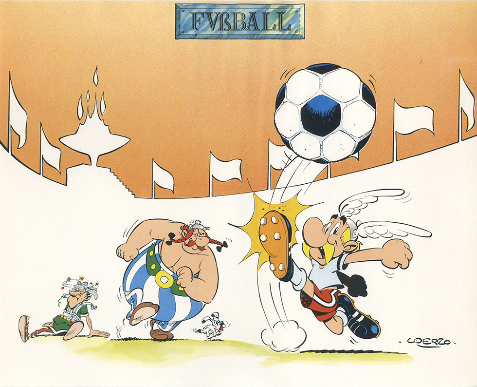</p> </div> <div class="grid-item" style="background-color: rgb(255, 255, 255);"> <p>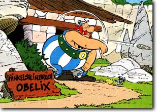</p> </div> </div> </div> <p style="text-align: center; color: tomato;font-size: 90%;"> ∅td's (NFL '13)\(\approx 2.8\) ∅goals (UK '13)\(\approx 2.8\) ∅tries (AUS '13)\(\approx 5.7\) </p> <p style="text-align: center; color: dodgerblue;font-size: 90%;"> <img src="./images/fottball_b.png" width=26 height=26> \(\approx 410(15)\)g \(\approx 430(20)\)g <img src="./images/rugby_b.png" width=26 height=26> \(\approx 430(25)\)g </p> --- <div style="text-align:top"> <h3 style="color:gray;font-size: 25px;"> Universal <span style="color: dodgerblue;"> Bose</span> and <span style="color: tomato;"> Fermi</span> properties <br> <!--p style="color: tomato;font-size: 40%;">reference links</h3--> </div> <hr style="margin-top: 10px;margin-bottom: 30px;" /> <div class="grid-container" style="grid-template-columns: auto auto;margin-top: 25px;"> <div class="grid-item" style="background-color: rgb(255, 255, 255);"> <p>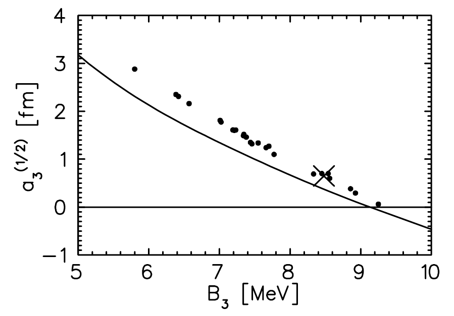</p> <figcaption style="font-size:10px;color:gray;"> <a href="http://arxiv.org/abs/nucl-th/9906032v4"><i style="font-size:14px;color:DodgerBlue" class="fa"> </i></a> P.F. Bedaque, H.-W. Hammer, U. van Kolck (2000)</figcaption> <div class="l2" style="margin-top:20px">Phillips <i>line</i>:</div> <div class="l3" style="color:dodgerblue;">low-energy deuteron-neutron amplitude \(=f(B_3)\)</div> </div> <div class="grid-item" style="background-color: rgb(255, 255, 255);"> <p>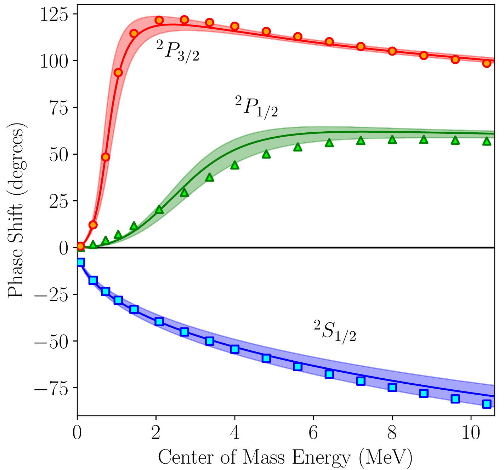</p> <figcaption style="font-size:10px;color:gray;"> <a href="https://arxiv.org/abs/2004.08474"><i style="font-size:14px;color:DodgerBlue" class="fa"> </i></a> K. Kravvaris et al. (2020)</figcaption> <div class="l2">neutron-\(\alpha\):</div> <div class="l3" style="text-align: center; color:tomato;">resonance poles\(=f(?)\)</div> </div> </div> <p style="text-align: center; color: dodgerblue;font-size: 90%;margin-top: 40px;"> \[a_{\text{dimer-dimer}}/a_{\text{atom-atom}}\approx0.6\] <span style="font-size:10px;color:gray;"> <a href="https://arxiv.org/abs/cond-mat/0309010v1"><i style="font-size:14px;color:DodgerBlue" class="fa"> </i></a> D.S. Petrov, C. Salomon, and G.V. Shlyapnikov (2003)</span> </p> --- <div style="text-align:top"> <h3 style="color:gray;font-size: 20px;"> Universal aspects of nuclear <span style="color: dodgerblue;"> fusion</span> and <span style="color: tomato;"> fission</span> <br> <!--p style="color: tomato;font-size: 40%;">reference links</h3--> </div> <hr style="margin-top: 10px;margin-bottom: 10px;" /> <p style="text-align:center;"><img src=/images/nuclbinding.png style="text-align:center;border-radius: 8px; max-width:95%; margin-top:30px;"></p> --- <style> table { border-collapse: collapse; width: 100%; } tr, td { border-bottom: 1px solid #ddd; padding: 15px; text-align: center; } </style> <div class="grid-container"> <div class="grid-item"><img src="/images/fission.png" style="display: block;margin-right: auto;max-height: 350px;"> <span style="font-size:10px;color:gray;"> Mayer-Kuckuk, Theo. Kernphysik: eine Einführung. Germany, Teubner, 1994.</span> </div> <div class="grid-item" style="font-size: 14px;">Mass difference between<br> <strong>i</strong>nitial and <strong>f</strong>inal state: $$Q=(m_i-m_f)\,c^2=T_f-T_a$$ <table class="tabular"> <th>reaction</th> <th>\(Q\) [MeV]</th> <tr> <td class="r t li2">\(d(d,n)^3\text{He}\)</td> <td class="t">\(3.27\)</td></tr> <td class="r t li2">\(d(d,p)t\)</td> <td class="t">\(4.03\)</td></tr> <td class="r t li2">\(d(d,\gamma)\alpha\)</td> <td class="t">\(23.8\)</td></tr> <td class="r t li2">\(t(p,n)^3\text{He}\)</td> <td class="t">\(-0.76\)</td></tr> <td class="r t li2" style="color:tomato;">\(t(d,n)\alpha\)</td> <td class="t">\(17.6\)</td></tr> <tr> </tbody> </table> </div> </div> <div class="grid-container"> <div class="grid-item" style="background-color: rgb(255, 255, 255);"> <p style="text-align: center; color: dodgerblue;font-size: 60%;margin-top: 40px;"> \[\sigma_{\text{max}}(t+d\to n+\alpha)\approx5000\,\text{mb}\] <span style="font-size:20px;color:tomato;"> Reaction-enhancement mechanism? </span> </p> </div> <div class="grid-item", style="background-color: rgb(255, 255, 255);"><img src="/images/fusion.jpg" style="display: block;margin-right: auto;max-height: 200px;"></div> </div> --- <div style="text-align:top"> <h3 style="color:gray;font-size: 20px;"> Resonances in <span style="color:tomato;">neutron-\(\alpha\)</span> scattering and relevance for deuteron-triton <span style="color: dodgerblue;"> fusion</span> <br> <!--p style="color: tomato;font-size: 40%;">reference links</h3--> </div> <hr style="margin-top: 10px;margin-bottom: 10px;" /> <p style="text-align:center;"><img src=/images/na_cross.png style="text-align:center;border-radius: 8px; max-width:90%; margin-top:0px;"></p> --- <h3>The front: <a style="color: black;text-align: center"> <strong style="font-size: 100%;color: dodgerblue;">Renormalized form of an \(A\)-body contact theory</strong> </a> </h3> <div style="color: tomato;text-align: left;font-size:22px;margin-top:20px"> Challenges: </div> <ul style="font-size: 20px;"> <li> Analytical guidance (Faddeev/Yakubovsky style)</li> <li> Accurate <strong>and</strong> efficient numerics for \(A>4\)</li> <li> The appropriate expansion point<br> <span style="font-size:10px;color:gray;"> <a href="https://journals.aps.org/pra/abstract/10.1103/PhysRevA.109.022814"><i style="font-size:14px;color:DodgerBlue" class="fa"> </i> Improved-action formulation</a> L. Contessi, <strong>M. Schäfer</strong>, and U. van Kolck (2024)</span> </p> </li> </ul> <p style="text-align:center;"><img src=/images/fig_bubble.svg style="text-align:center;border-radius: 8px; width:80%; margin-top:10px;"></p> --- <div style="text-align:top"> <h3 style="color:gray;font-size: 20px;"> The universal, statistical <span style="color: dodgerblue;"> particle-exchange </span>interaction: </h3> </div> <hr style="margin-top: 0px;margin-bottom: 10px;" /> <p style="color: tomato;font-size: 90%; text-align: center;">i.e. <strong>identical-fermion</strong> swap between di-neutron states \(\big|i,j,m,n\big\rangle\)</p> <div style="color: gray;text-align: center;margin-top: 50px;margin-bottom: 50px; font-size: 80%;o"> </div> <p style="color: dodgerblue;font-size: 90%; text-align: center;"> \( \zeta\begin{pmatrix}i&m\\j&n\end{pmatrix}= \int d^3(x_1,x_2,x_{1'},x_{2'}) \big\langle i\big\vert x_{1},x_{2'}\big\rangle \big\langle j\big\vert x_{1'},x_{2}\big\rangle \big\langle x_{1'},x_{2'}\big\vert n\big\rangle \big\langle x_{1},x_{2}\big\vert m\big\rangle \) </p> <p style="color: black;font-size: 110%; text-align: center;margin-top: 50px;"> di-neutron <strong>m</strong> contains the <strong>same</strong> neutron as di-neutron <strong>i</strong>, e.g., \(|\uparrow\,\rangle\)<br> </p> --- <div style="text-align:top"> <h3 style="color:gray;font-size: 20px;"> The universal minimum \(\hat{V}\): <span style="color: dodgerblue;"> structure </span> <strong>and</strong> <span style="color: tomato;"> input </span><br> <p style="color: black;font-size: 70%;"> \begin{align} \Psi(E)&=C+C^2\cdot \color{dodgerblue}{L_1(E)}+C^3\cdot \color{dodgerblue}{L_2(E)}+\ldots \\ &=C(\lambda)+C(\lambda)^2\cdot L_{1,\lambda}(E)+C(\lambda)^3\cdot L_{2,\lambda}(E)+\ldots \\ &\stackrel{!}{"="}\color{tomato}{B_{\text{exp}}}=\frac{\langle\Psi\vert\hat{H}\vert\Psi\rangle}{\langle\Psi\vert\Psi\rangle} \end{align} </h3> </div> <hr style="margin-top: 10px;margin-bottom: 10px;" /> <div style="color: gray;text-align: center;margin-top: 30px;font-size: 80%;o"> <img src="./images/loEFT.svg" style="max-height: 430px;"> </div> --- <div style="text-align:top"> <h3 style="color:gray;font-size: 20px;"> What do we know about <span style="color: dodgerblue;"> universal</span> phenomena in the 4-<span style="color: dodgerblue;">boson</span> system?<br> <p style="color: tomato;font-size: 70%;">\(a_2\to\infty\) i.e. <strong>no</strong> 2-body scale</h3> </div> <hr style="margin-top: 10px;margin-bottom: 10px;" /> <div style="color: gray;text-align: center;margin-top: 30px;font-size: 80%;o"> <p>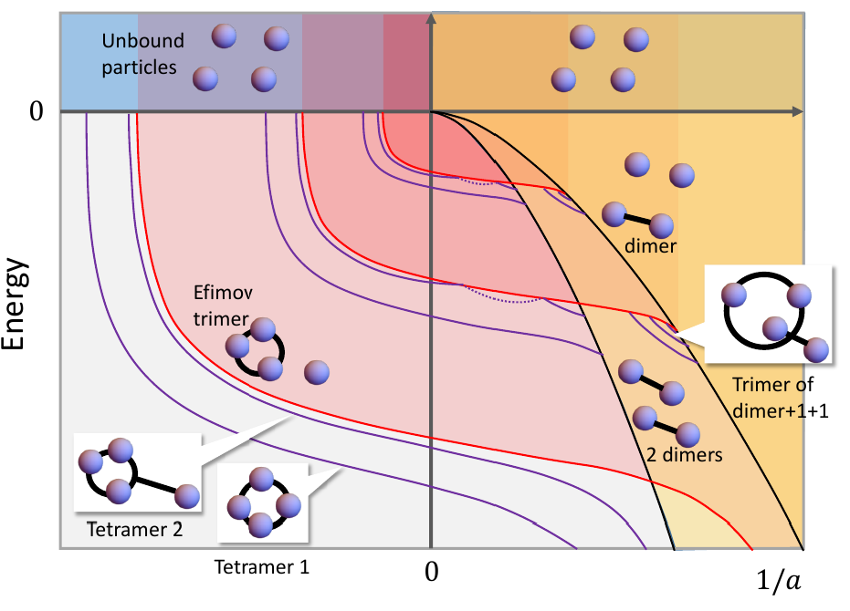</p> <figcaption style="font-size:10px;color:gray;"> <a href="https://arxiv.org/abs/1610.09805"><i style="font-size:14px;color:DodgerBlue" class="fa"> </i></a> P. Naidon, S. Endo (2016 review)</figcaption> </div> </div> </div> --- <div style="text-align:top"> <h3 style="color:gray;font-size: 20px;"> How does the <span style="color: dodgerblue;">minimal</span> theory describe 4-<span style="color: dodgerblue;">component-fermion</span> reactions? <a style="color: tomato;font-size: 110%;">\(a_2<\infty\)</a></h3> </div> <hr style="margin-top: 10px;margin-bottom: 10px;" /> <div style="color: gray;text-align: center;margin-top: 10px;font-size: 80%;o"> <p>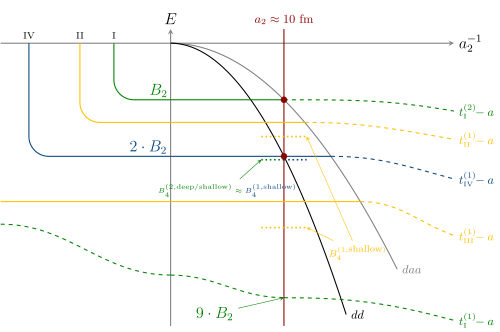</p> </div> </div> </div> --- <div style="text-align:top"> <h3 style="color:gray;font-size: 20px;"> <span style="color: darkgreen;">Phase-shift</span> parameters of the 2-channel <span style="color: dodgerblue;"> S-matrix</span> <a style="color: tomato;font-size: 110%;float: right;">\(S_{if}=\eta_{if}\,e^{2i\delta_{if}}\)</a></h3> </div> <hr style="margin-top: 10px;margin-bottom: 10px;" /> <div> <p>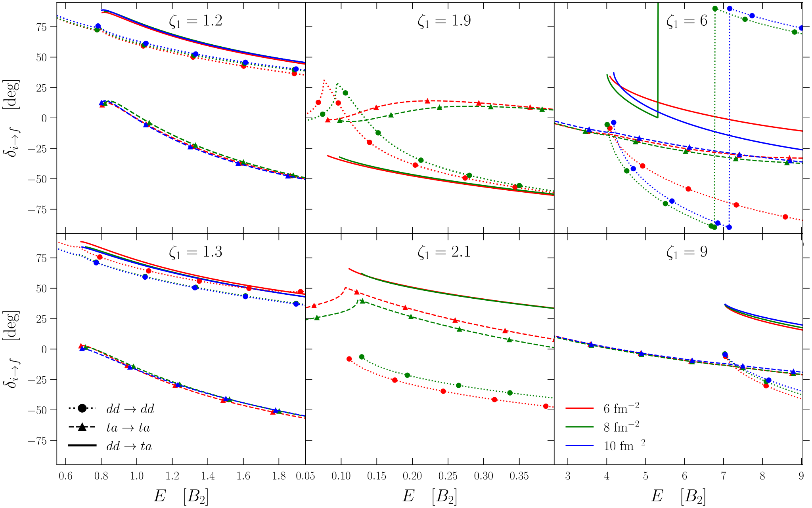</p> <figcaption style="font-size:10px;color:gray;"> <a href="https://arxiv.org/abs/2411.00386"><i style="font-size:14px;color:DodgerBlue" class="fa"> </i></a> S. Mondal, R. Goswami, U. Raha, JK (2024)</figcaption> <span style="float:right;">\(\zeta=B_3/B_2\)</span> </div> --- <div style="text-align:top"> <h3 style="color:gray;font-size: 20px;"> <span style="color: darkgreen;">Diagonal- and mixing-strength</span> parameters of the 2-channel <span style="color: dodgerblue;"> S-matrix</span> <a style="color: tomato;font-size: 110%;float: right;">\(S_{if}=\eta_{if}\,e^{2i\delta_{if}}\)</a></h3> </div> <hr style="margin-top: 10px;margin-bottom: 10px;" /> <div style="color: gray;text-align: center;margin-top: 30px;font-size: 80%;o"> <p>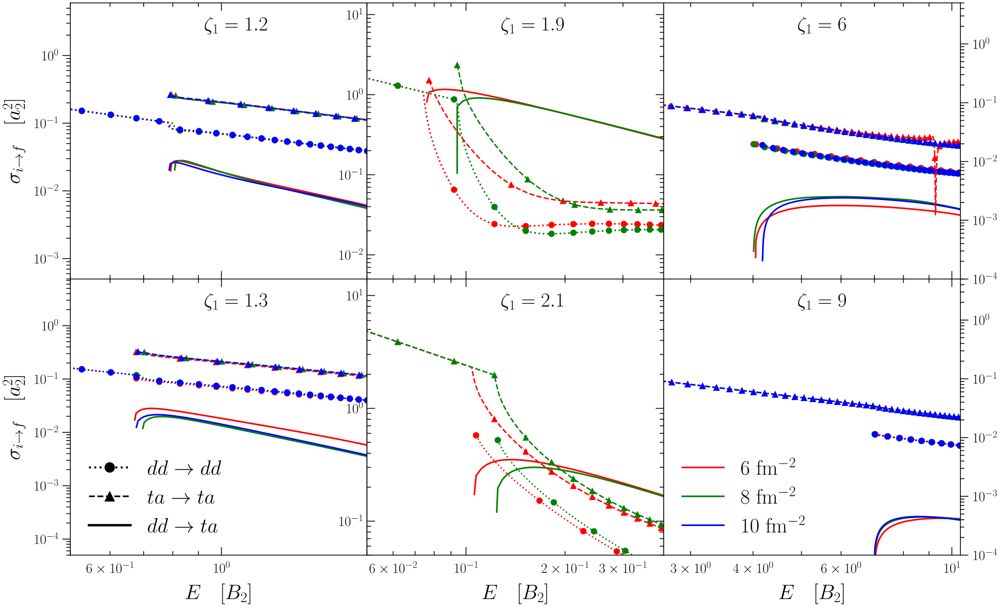</p> <figcaption style="font-size:10px;color:gray;"> <a href="https://arxiv.org/abs/2411.00386"><i style="font-size:14px;color:DodgerBlue" class="fa"> </i></a> S. Mondal, R. Goswami, U. Raha, JK (2024)</figcaption> <span style="float:right;">\(\zeta=B_3/B_2\)</span> <!--div class="l2" style="margin-top:20px">2-fragment reaction cross sections <i>line</i>:</div--> <!--div class="l3" style="color:dodgerblue;"></div--> </div> --- <div style="text-align:top"> <h3 style="color:gray;font-size: 20px;"> "Canonical" bosonic reaction rates in the <span style="color: dodgerblue;"> unitary limit</span> <br> <!--p style="color: tomato;font-size: 40%;">reference links</h3--> </div> <hr style="margin-top: 10px;margin-bottom: 10px;" /> <div class="grid-container" style="grid-template-columns: auto;margin-top: 25px;"> <div class="grid-item" style="background-color: rgb(255, 255, 255);"> <p>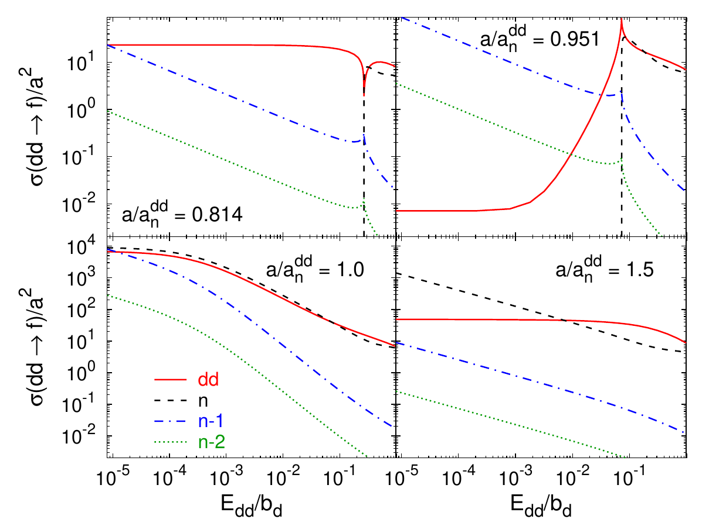</p> <figcaption style="font-size:10px;color:gray;"> <a href="https://arxiv.org/abs/1107.3956v1"><i style="font-size:14px;color:DodgerBlue" class="fa"> </i></a> A. Deltuva (2011)</figcaption> <!--div class="l2">neutron-\(\alpha\):</div--> <!--div class="l3" style="text-align: center; color:dodgerblue;">resonance poles\(=f(?)\)</div--> </div> </div> --- <div style="text-align:top"> <h3 style="color:gray;font-size: 20px;"> Reaction vs. elastic strength with different <span style="color: dodgerblue;"> atom-atom scattering lengths \(a_2\)</span> <br> <!--p style="color: tomato;font-size: 40%;">reference links</h3--> </div> <hr style="margin-top: 10px;margin-bottom: 10px;" /> <div style="color: gray;text-align: center;margin-top: 30px;font-size: 80%;o"> <img src="./images/crosssection_of_bd.svg" style="max-height: 500px;"> <figcaption style="font-size:10px;color:gray;"> <a href="https://arxiv.org/abs/2411.00386"><i style="font-size:14px;color:DodgerBlue" class="fa"> </i></a> S. Mondal, R. Goswami, U. Raha, JK (2024)</figcaption> <span style="float:right;">\(\zeta=B_3/B_2\)</span> </div> --- <div style="text-align:top"> <h3 style="color:gray;font-size: 20px;"> Comparison with potential models: </div> <hr style="margin-top: 10px;margin-bottom: 10px;" /> <div style="color: gray;text-align: center;margin-top: 30px;font-size: 80%;o"> <p>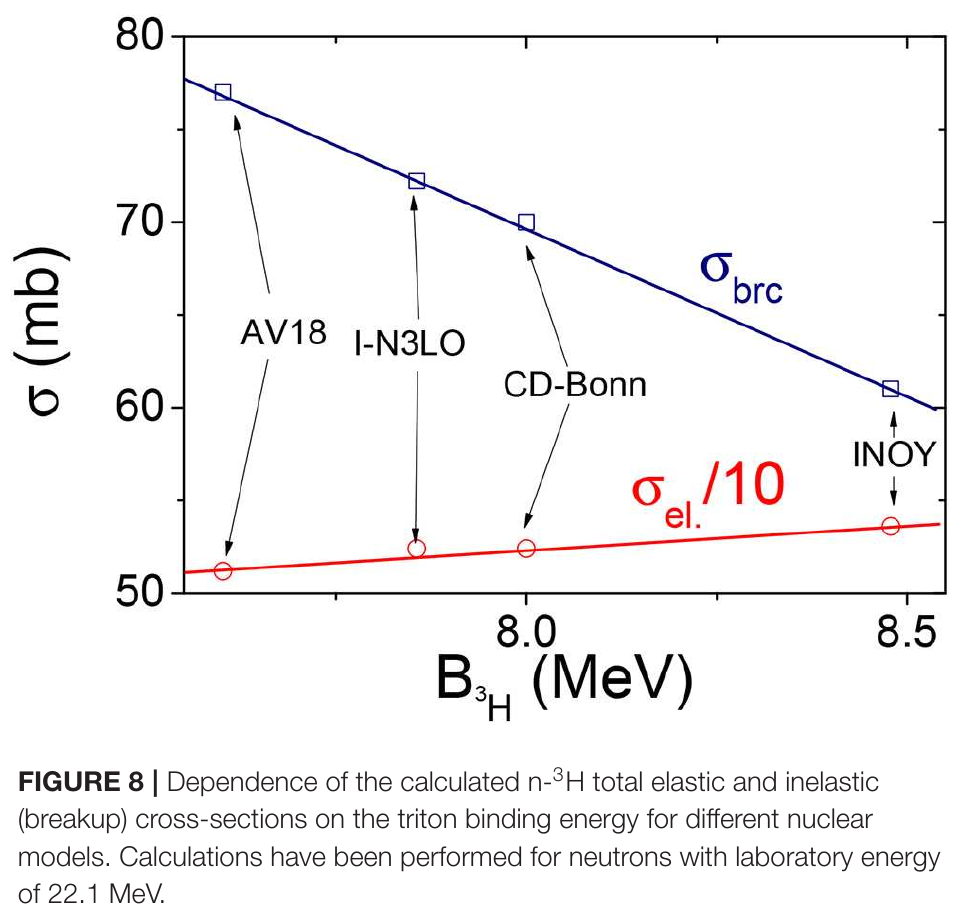</p> <figcaption style="font-size:10px;color:gray;"> <a href="https://arxiv.org/abs/2002.05876"><i style="font-size:14px;color:DodgerBlue" class="fa"> </i></a> Rimantas Lazauskas, Jaume Carbonell (2020)</figcaption> </div> --- <div style="text-align:top"> <h3 style="color:gray;font-size: 25px;"> <strong><i>An</i></strong> <span style="color: dodgerblue;"> algorithm</span> for the analytic parametrization of <span style="color: dodgerblue;"> inter-cluster</span> potential with <span style="color: dodgerblue;"> 2-, 3-, &c. couplings</span><br> <!--p style="color: tomato;font-size: 50%;">Assumptions: </h3--> </div> <hr style="margin-top: 1px;margin-bottom: 0px;" /> <!--div style="color: gray;text-align: center;margin-top: 30px;font-size: 80%;o"> text and formula \(t\) above <br> \(a, b, c, n\): arbitrary constants </div--> <div class="grid-container" style="grid-template-columns: auto;margin-top: 0px;"> <div class="grid-item" style="background-color: rgb(255, 255, 255);"> <ul> <li style="font-size: 50%;color:red">Expand in <i>realistic</i> DoF's <p style="color: black;font-size: 80%;"> \begin{align*} \Psi=\hat{\mathcal{A}}\;{\Bigg\lbrace}& \sum\limits_i\phi(A_i)\phi(B_i)F_i(\mathbf{R}_i) + \sum\limits_j\phi(A_j)\phi(B_j)\phi(C_j)F_j(\mathbf{R}_{1j},\mathbf{R}_{2j})\\ &+\ldots+\sum\limits_mc_m\chi_m\Bigg\rbrace\; Z(\mathbf{R}_{\text c.m.}) \end{align*} </p> </li> <li style="font-size: 50%;color:red"> Obtain these states explicitly within "your" theory <p style="color: black;font-size: 80%;"> \(\hat{H}\phi^{(n)}_A=e_A^{(n)}\phi^{(n)}_A\) </p> </li> <li style="font-size: 50%;color:red"> "Freeze" the asymptotic states <p style="color: black;font-size: 80%;"> \(\delta\Psi\stackrel{!}{=}\delta F_i\) </p> <li style="font-size: 50%;color:red"> Integrate-out/average-over internal DoF's <p style="color: black;font-size: 80%;"> \begin{gather*} \left(\hat{T}_{\mathbf{R}}-E_\text{rel}+\mathbb{N}^{-1}\langle\phi_A\phi_B\vert\hat{V}\vert\phi_A\phi_B\rangle\right)\chi(\mathbf{R})\\ -\mathbb{N}^{-1}\int d\mathbf{R}'\left[\langle\phi_A\phi_B\vert\left(\hat{T}_{\mathbf{R}}-E_\text{rel}+ \hat{V}\right)\hat{A}\left\lbrace\vert\phi_A\phi_B\rangle\delta(\mathbf{R}-\mathbf{R}')\right\rbrace\right]\chi(\mathbf{R}')=0 \end{gather*} </p> </li> <li style="font-size: 50%;color:red"> Obtain inter-cluster dynamics with a potential matrix parametrized with "microscopic" observables <p style="color: black;font-size: 80%;"> \begin{gather*} \sum_{n=1}^{N_{\text{loc}}}\hat{\eta}_n~e^{-w_n\mathbf{R}^2}\chi(\mathbf{R})- \sum_{n=1}^{N_{\text{n-loc}}}\int\left\lbrace\hat{\zeta}_n\,e^{-a_n\mathbf{R}^2-b_n\mathbf{R}\cdot\mathbf{R}'-c_n\mathbf{R}'^2}\right\rbrace\chi(\mathbf{R}') d\mathbf{R}'=0\\ \color{dodgerblue}{\text{with$\;\;\;\hat{\eta}_n,\hat{\zeta}_n,w_n,a_n,b_n,c_n\;\;\;\text{dependent upon}\;\;\;C_{nn}(\lambda),C_{nnn}(\lambda),\color{red}{\alpha(\lambda)},E_{\text{rel}},A,B$}} \end{gather*} </p> </li> </ul> </div> </div> --- <div style="text-align:top"> <h3 style="color:gray;font-size: 20px;"> 2-body contact-interaction strength's <span style="color: dodgerblue;"> regulator dependence</span> <br> <!--p style="color: tomato;font-size: 40%;">reference links</h3--> </div> <hr style="margin-top: 10px;margin-bottom: 10px;" /> <div style="color: gray;text-align: center;margin-top: 30px;font-size: 80%;o"> <img src="./images/LECs.svg" style="max-height: 400px;"> </div> --- <div style="text-align:top"> <h3 style="color:gray;font-size: 20px;"> dimer-atom scattering with an effective inter-cluster potential <span style="color: dodgerblue;"> regulator dependence</span> <br> <!--p style="color: tomato;font-size: 40%;">reference links</h3--> </div> <hr style="margin-top: 10px;margin-bottom: 10px;" /> <div style="color: gray;text-align: center;margin-top: 30px;font-size: 80%;o"> <p>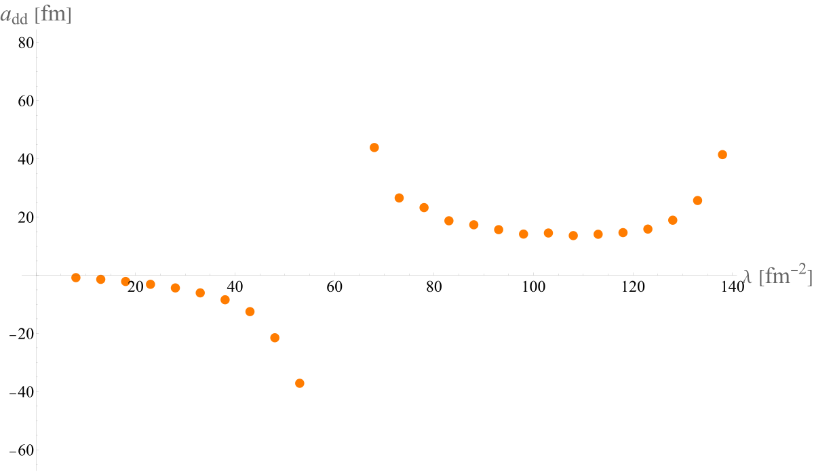</p> </div> --- <style> .remark-slide-number { font-size: 10pt; margin-bottom: -11.6px; margin-right: 10px; color: #FFFFFF; /* white */ opacity: 1; /* default: 0.5 */ } </style> <h3 style="font-size:90%">SRM University campus at <a href="https://en.wikipedia.org/wiki/Mangalagiri">Mangalagiri</a> <img src="./images/in_flag.svg" width=18 height=18></h3> <hr style="margin-top: -10px;margin-bottom: 10px;" /> <div class="bg" style="height: 90%"></div>